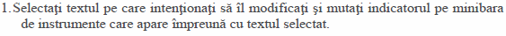
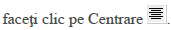
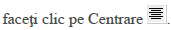
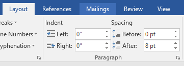

1. Modificarea dimensiunii textului

2. Modificarea culorii textului
3. Modificarea tipului fontului
4. Folosirea stilului bold (caractere aldine), italic (caractere cursive) şi subliniere.
5. Alinierea textului la stâga sau dreapta sau centrarea acestuia
 sau 
sau 
6. Indentarea paragrafului
|  | Selectaţi paragraful; În fila Aspect pagină (Layout) selectaţi mărimea indentării în stânga (left) sau dreata (right) pe care o dorim (Prin indentare se înţelege spaţiul care se lasă în stânga sau în dreapta paragrafului).Dacă dorim să lăsăm spaţiu înainte sau după paragraf, stabilim aceste valori în caseta Spaţiere (Spacing) |
7. Modificarea spaţierii liniilor
Selectaţi paragraful sau paragrafele dorite:Metoda 1
În fila Aspect pagină (Layout) lansaţi caseta de dialog Paragraf (Paragraph) Din lista Spaţiere linii (Line Spacing) puteţi alege: Spaţiere normală (Single), Spaţiere la un rând şi jumătate (1,5 lines), Spaţiere la două rânduri (Double) sau alte spaţieri speciale (At least, Exactly sau Multiple );Metoda 2
În fila Pornire (Home) daţi clic pe pictograma Spaţiere linii (Line Spacing) şi din lista deschisă alegeţi spaţierea dorită: 1,0 ; 1,15 ; 1,5 ; 2,0 ………8. Introducerea într-un chenar a unui paragraf sau a unui text.
În fila Proiectare (Design) grupul Fundal pagină(Page Background) daţi click pe Borduri pagină(Page Borders) :9. APLICAŢIE: